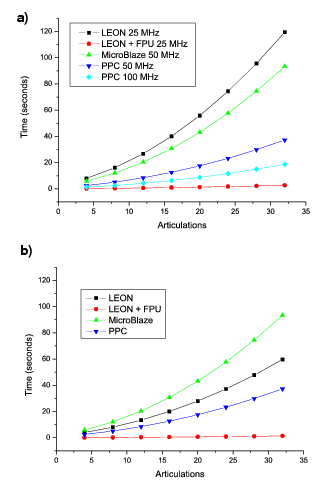

Next: 6 Conclusiones y trabajos Up: 5 Resultados Previous: 1 Resultados de la


Next: 6
Conclusiones y trabajos Up: 5
Resultados Previous: 1
Resultados de la
Table 4: Tiempo de cálculo del movimiento, GRT, como función del número de articulaciones, medido para las cuatro arquitecturas. El parámetro m se ha fijado a 20.
|
|
Tiempo de ejecución del algoritmo (segundos) |
||||||
|
n |
Arq 1 |
Arq 2 |
Arq 3 |
Arq 4a |
Arq 4b |
||
|---|---|---|---|---|---|---|---|
|
4 |
7,980 |
0,199 |
5,865 |
2,552 |
1,276 |
||
|
8 |
16,116 |
0,392 |
12,065 |
5,105 |
2,553 |
||
|
12 |
26,794 |
0,632 |
20,346 |
8,445 |
4,225 |
||
|
16 |
40,069 |
0,941 |
30,652 |
12,586 |
6,297 |
||
|
20 |
55,866 |
1,295 |
43,070 |
17,504 |
8,758 |
||
|
24 |
74,341 |
1,707 |
57,677 |
23,259 |
11,639 |
||
|
28 |
95,585 |
2,179 |
74,452 |
29,871 |
14,948 |
||
|
32 |
119,404 |
2,706 |
93,293 |
37,277 |
18,655 |
||
La ejecución del algoritmo determina el tiempo que el robot necesita para generar una nueva secuencia de movimiento. Este tiempo se denomina GRT (Gait Recalculation Time). Para que el robot pueda cambiar rápidamente de un tipo de movimiento a otro, se requiere un GRT bajo, del orden de 2 segundos.
|
 |
Figure 5: a) Comparación del GRT para las cuatro arquitecturas evaluadas, como función del número total de articulaciones. b) Resultados normalizados suponiendo una frecuencia de reloj de 50MHz para todas las arquitecturas.
La tabla 4 muestra el GRT para las cuatro arquitecturas evaluadas en función del número de articulaciones. Estos resultados se representan en la figura 5a y el rendimiento de las arquitecturas en la figura 5b, suponiendo que todas funcionasen a 50MHz.
Como era de esperar, el GRT se incrementa con el número de articulaciones del robot. A mayor número de articulaciones, mayor el tiempo que tarda el robot en recalcular la nueva secuencia de movimiento. El PowerPC obtiene unos resultados mucho mejores que el MicroBlaze y LEON2 (Arquitecturas 1 y 3), ya que al tratarse de un hard core, dispone de unidades hardware específicas para algunas de las operaciones. El resultado más significativo se obtiene con la arquitectura 2 (LEON2 + FPU). Para un robot gusano de ocho articulaciones, el rendimiento obtenido por esta arquitectura es 40 veces superior al de LEON2 sin FPU, empleando sólo un 6% más de recursos. Este rendimiento es 6,5 veces superior al obtenido por el PowerPC a 100 MHz.
De todas las arquitecturas evaluadas, sólo con la segunda (LEON2 + FPU) se consigue un GRT menor a 2 segundos.


Next: 6
Conclusiones y trabajos Up: 5
Resultados Previous: 1
Resultados de la